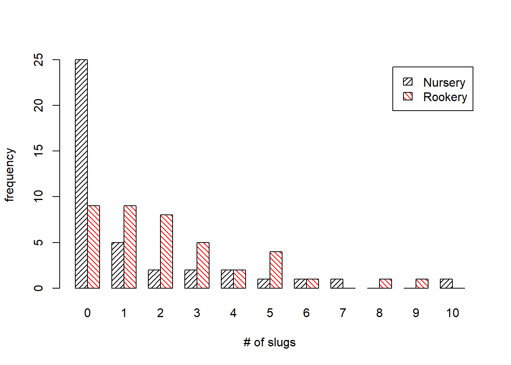

Lab Exercise 5 (optional)
NRES 746
October 26, 2016
Model selection!
This exercise was modified from a lab by J. Weiss: see here
New R concepts/commands
ifelse tests each element of a vector with respect to a condition (first argument). If the condition tests TRUE the second argument is returned. If the condition tests FALSE, the third argument is returned. The result is a vector of the same length as the input vector.
min returns the minimum value from a vector or matrix
NULL is not a function but is a reserved word used to identify the value of an object of length zero
round rounds its argument to the number of decimals specified.
t is the transpose function. It switches the rows and columns of a matrix.
angle= (argument to barplot) specifies the angle of the hatch marks in the bars of barplots.
beside= (argument to barplot) when TRUE creates side-by-side bar plots rather than stacked bar plots
density= (argument to barplot) controls the spacing of hatch marks in hatched bars
legend.txt= (argument to barplot) when TRUE adds a legend to a bar plot when multiple groups are plotted
The Crawley slug data set
We use a data set that appears on Michael Crawley’s web site for his text Statistical Computing (Crawley 2002).
Get the data
slugs<-read.table( 'http://www.bio.ic.ac.uk/research/mjcraw/statcomp/data/slugsurvey.txt', header=TRUE)
head(slugs)## slugs field
## 1 3 Nursery
## 2 0 Nursery
## 3 0 Nursery
## 4 0 Nursery
## 5 0 Nursery
## 6 1 NurseryCrawley describes these data as follows (Crawley 2002, p. 542).
“Count data were obtained on the number of slugs found beneath 40 tiles placed in a stratified random grid over each of two permanent grasslands. This was part of a pilot study in which the question was simply whether the mean slug density differed significantly between the two grasslands.” My interpretation of this is that the experiment was extraordinarily simple. Rocks of standard shape and size were laid out in two fields and at some point later in time the fields were revisited and the number of slugs under each rock was recorded. The data we are given are the raw counts, i.e., the individual slug counts for each rock. Thus we have a total of 80 observations, 40 from each field type. A value of 0 means no slugs were found under that rock. Crawley then spends a chapter of his textbook trying one statistical test after another to test the hypothesis of no mean difference in slugs between the two field types. In the end his conclusion is ambiguous. Some tests say there is a difference, some say there isn’t. I submit that the problem posed by Crawley is essentially an uninteresting one. Any two populations in nature will typically differ with respect to whatever characteristic we care to measure. Whether that difference can be deemed statistically significant is not a statement about nature, but instead is a statement about the sample size used in the study. With enough data any difference, no matter how small, will achieve “statistical significance”. A far more useful approach is to determine some way to characterize the differences in slug distribution that exist and then assess whether that characterization tells us anything interesting about slugs and/or nature in general. Our goal in this exercise is find a statistical model that fits the data and provides insight into the distribution of slugs. I use this exercise as an illustration of how AIC can be used to select models.
First we summarize the distribution of slugs under rocks in the two field types.
table(slugs$slugs,slugs$field)##
## Nursery Rookery
## 0 25 9
## 1 5 9
## 2 2 8
## 3 2 5
## 4 2 2
## 5 1 4
## 6 1 1
## 7 1 0
## 8 0 1
## 9 0 1
## 10 1 0A bar plot of the two distributions would be useful. We have a number of choices. If we apply the barplot function to the tabled values we get two stacked bar plots (Fig. 1).
out <- table(slugs$slugs,slugs$field)
barplot(out)
On the other hand if we first transpose the table so that the field categories define the rows of our table, we can obtain an ordinary bar plot in which the bars representing counts in the two fields appear side by side and are inter-nested among each other.
barplot(t(out), beside=TRUE, angle=c(45,135), density=c(20,20), col=c('black','red'), legend.text=TRUE, xlab='# of slugs', ylab='frequency')
The transpose function is t(). Setting the beside option to TRUE creates the side by side display. (The alternative would be a set of stacked bars.) I use the angle option to get bars filled with hatch marks rather than solid fill. The angles specified are the angles the hatch marks make with the horizontal. Since the transposed table has two rows I need a different angle for each row (field type). The density option controls how closely spaced the hatch marks are displayed. It also is a vector of length two. The legend.text option adds a legend that identifies the field type.
We can also customize the legend in the usual way as shown in the code below (resulting graph not shown). This is an alternative to using the legend.text=TRUE option.
coords<-barplot(t(out), beside=TRUE, angle=c(45,135), density=c(20,20), ylim=c(0,27), col=c('black','red'), xlab='# of slugs', ylab='frequency')
box()
legend(coords[1,8], 26, c('nursery','rookery'), density=c(20,20), angle=c(45,135), fill=c('black','red'), cex=c(.8,.8),bty='n')## Warning in if (xc < 0) text.width <- -text.width: the condition has length
## > 1 and only the first element will be usedBased on the bar charts the distributions look quite different. Observe the large fraction of zeros seen among the nursery slugs. We might be able to generate distributions that resemble these two by varying the dispersion parameter in a negative binomial distribution (while holding the mean fixed).
In considering what probability model might be appropriate for these data, I view any of the following as possible candidates. (Separate and common refer to the two field types.)
Poisson
- common λ
- separate λ
Negative binomial
- common μ and θ
- separate μ and common θ
- common μ and separate θ
- separate μ and θ
normal, log transform
- common μ and σ
- separate μ and common σ
- common μ and separate σ
- separate μ and σ
normal, square root transform (same 4 possibilities as logarithm models)
ZIP model (zero-inflated Poisson)
- common λ and θ
- separate λ and common θ
- common λ and separate θ
- separate λ and θ
ZINB model (9 possible models)
The ZIP model I use in this exercise is the zero-inflated Poisson model of Lambert (1992). We could also consider fitting the hurdle model but without additional predictors to examine there would not be much point.
Fitting this many models is clearly overkill and some of them could be dismissed out of hand. Burnham & Anderson (2002) would clearly disapprove of this approach as they would argue we should only be fitting those models that can be biologically motivated. I fit so many models here largely to illustrate the mechanics of model-building and the use of AIC to compare models, and only secondarily in order to learn something about the ecology of slugs.
Poisson models
Common means model
Construct likelihood function and optimize:
poi.1<-function(data,p) -sum(log(dpois(data$slugs,lambda=p)))In finding the MLE we need an initial estimate for λ. Since we know λ is the mean of the distribution, I calculate the mean number of slugs found under rocks.
initial estimate
mean(slugs$slugs)## [1] 1.775We can fit the model using the nlm function (newton minimization algorithm). I save the output as out1 for use later on in model comparison. From the code and gradient of the output we see that the model converged. The estimate of λ returned is indeed the mean slug count.
out1 <- nlm(function(p) poi.1(slugs,p),2)## Warning in dpois(data$slugs, lambda = p): NaNs produced## Warning in nlm(function(p) poi.1(slugs, p), 2): NA/Inf replaced by maximum
## positive valueout1## $minimum
## [1] 176.8383
##
## $estimate
## [1] 1.774999
##
## $gradient
## [1] 1.07282e-06
##
## $code
## [1] 1
##
## $iterations
## [1] 5Separate means Poisson model
In this model we allow the slugs from the two different field types to each have their own value of the parameter λ. Although we could just fit the models separately to the two groups of slugs, that approach would not be very efficient nor would it generalize well to more complicated models we’ll want to fit later. Although field type would appear to be a character variable, it is in fact a factor variable in R. Factor variables are actually numeric variables of a special sort. We’ll take advantage of this specialness later, for the moment we’ll only make use of their intrinsic numerical character. The numerical coding of the variable field can be seen as follows.
as.numeric(slugs$field)## [1] 1 1 1 1 1 1 1 1 1 1 1 1 1 1 1 1 1 1 1 1 1 1 1 1 1 1 1 1 1 1 1 1 1 1 1
## [36] 1 1 1 1 1 2 2 2 2 2 2 2 2 2 2 2 2 2 2 2 2 2 2 2 2 2 2 2 2 2 2 2 2 2 2
## [71] 2 2 2 2 2 2 2 2 2 2So the nursery slugs are coded 1 and the rookery slugs are coded 2. (The coding is done alphabetically by default.) I make use of this fact to fit a separate λ for each field. I display the function below and then go into the details.
poi.2<-function(data,p) {
field.dummy<-as.numeric(data$field)-1
mylambda<-p[1]+p[2]*field.dummy
negloglike<- -sum(log(dpois(data$slugs,lambda=mylambda)))
negloglike
}The first line of the body of the function (after the function declaration line) subtracts 1 from the numeric coding of field. This changes its current values of 1 and 2 to the new values 0 and 1. The nursery slugs are now coded 0 and the rookery slugs are coded 1. I name the new coding field.dummy because the coding I’m using for nominal data is generally called dummy coding. The second line creates a variable called mylambda that is defined in terms of field.dummy. Since field.dummy is a vector, mylambda will also be a vector. As the value of field.dummy changes among the observations, the value of mylambda will also change. For nursery slugs field.dummy equals 0. Thus for nursery slugs mylambda has the value:
mylambda = p[1] + p[2]*0 = p[1]
For rookery slugs field.dummy equals 1. Thus for rookery slugs mylambda has the value
mylambda = p[1] + p[2]*1 = p[1] + p[2]
In summary we have the following.
So we see that p[1] is the value of λ for nursery slugs. Since the value of λ for rookery slugs is p[1]+p[2] we see that p[2] represents the difference in the value of λ between nursery and rookery slugs. Since λ is the mean, p[2] is the mean slug count difference between nursery and rookery slugs. The third line in the body of the function is the usual definition of the negative loglikelihood for a Poisson model. Notice that it uses mylambda as the value for λ. Hence the value for λ will differ depending upon field type. The last line is a print statement. Specifying the name of a variable all by itself causes R to print its contents. This last line is crucial because otherwise R will not return a value. In order to use the function I first need initial estimates for the components of p. To get these I calculate the mean number of slugs in the two field types. I use the tapply function for this.
tapply(slugs$slugs,slugs$field,mean)## Nursery Rookery
## 1.275 2.275The mean difference is 1. Hence I use 1.2 as the estimate for p[1] (the mean for nursery slugs) and 1 for p[2] (the mean difference).
Let’s optimize!
out2 <- nlm(function(p) poi.2(slugs,p),c(1.2,1))
out2## $minimum
## [1] 171.1275
##
## $estimate
## [1] 1.2749997 0.9999997
##
## $gradient
## [1] 1.125723e-05 -1.506351e-06
##
## $code
## [1] 1
##
## $iterations
## [1] 8I check the gradient and code to verify the model has converged.
Both components are approximately zero as they should be and the estimates are nearly exactly what we would expect. We can examine the negative loglikelihoods of the two models we’ve fit thus far.
out1$minimum## [1] 176.8383out2$minimum## [1] 171.1275So we see that the separate means model is an improvement. Its minimum negative loglikelihood value is smaller (hence the value of its loglikelihood is larger). Since the goal in maximum likelihood estimation is to maximize the probability of observing the data we did observe, model 2 does a better job of this. A more honest comparison of models is to use AIC. I write a function that calculates the AIC of a model. The AIC formula is -2LL + 2k
The following function implements this formula for these data.
my.aic<-function(output) -2*(-output$minimum) + 2*length(output$estimate)The extra minus sign in front of output$minimum converts the negative loglikelihood we obtain from nlm to loglikelihood. I use the length function applied to the estimate to count the number of parameters, K, that were estimated. Applying this function to the two models we’ve fit thus far, I obtain the following.
my.aic(out1)## [1] 355.6766my.aic(out2)## [1] 346.2551The second model has the smaller AIC and should be preferred. The difference in AIC is substantial indicating there is very little support for the first model.
Negative binomial models
The negative binomial probability model has two parameters, μ and θ, the mean and dispersion. One, neither, or both of these parameters could be allowed to vary across field types yielding 3-parameter, 2-parameter, and 4-parameter models.
ZIP models
The zero-inflated Poisson model (excess zeros mixture model) is presented in the Bolker book. The probability formula derived there is reproduced below.
Recall that this is the heterogeneous zeros model. The model assumes zero counts arise from two sources. The first source contributes a fraction θ to the probability of a zero count. The remaining fraction derives from a Poisson distribution. As with the negative binomial models there are four models we could consider here. We can let θ and λ be the same in the two field types. We can let λ differ in the two field types but estimate a common θ. We can let θ differ in the two field types but estimate a common λ. We can estimate separate values of λ and θ in the two field types. I consider each of these in turn.
Common mean and zero fraction ZIP model
The function for obtaining the negative loglikelihood of the common λ and θ ZIP model is given below.
#common lambda and theta
zip1<-function(data,p) {
lambda<-p[1]
theta<-p[2]
zero.term<-sum(log(theta+(1-theta)* dpois(data$slugs[data$slugs==0], lambda)))
nonzero.term<-sum(log((1- theta)* dpois(data$slugs[data$slugs>0], lambda)))
negloglike<- -(zero.term+nonzero.term)
negloglike
}The first two lines of the body of the function serve no purpose here except to identify the parameter order. I include them because they make it easy to generalize this function to the three other ZIP models we will fit. Because the ZIP model has a different probability formula for the zero and nonzero counts I need separate lines in the function for these calculations, zero.term and nonzero.term. You should see that these two lines are a direct translation of the formula given above into R code. To ensure that zero.term is only calculated for observations in which the slug count is zero, I use the Boolean expression data\(slugs[data\)slugs==0]inside the dpois function. This selects only the slug counts that equal zero. Likewise to use only the nonzero counts in the nonzero.term formula I use the Boolean expression data\(slugs[data\)slugs>0]to select those counts that are greater than zero. Finally I add the two terms and place a negative sign in front of the sum to yield the negative loglikelihood. A sensible initial estimate for λ is the mean of the nonzero slug counts. This will only approximate the final estimate because some of the zero counts also come from the Poisson part of the model. A sensible initial estimate for θ is the fraction of zeros. This will only approximate the final estimate of θ because some of the zeros do come from the Poisson part of the model.
mean(slugs$slugs[slugs$slugs>0])## [1] 3.086957table(slugs$slugs)[1]/sum(table(slugs$slugs))## 0
## 0.425I use λ = 3 and θ = 0.4 as my initial estimates.
out7 <- nlm(function(p) zip1(slugs,p),c(3,.4))## Warning in log(theta + (1 - theta) * dpois(data$slugs[data$slugs == 0], :
## NaNs produced## Warning in nlm(function(p) zip1(slugs, p), c(3, 0.4)): NA/Inf replaced by
## maximum positive valueout7## $minimum
## [1] 150.4711
##
## $estimate
## [1] 2.920557 0.392239
##
## $gradient
## [1] 2.724850e-07 4.831691e-07
##
## $code
## [1] 1
##
## $iterations
## [1] 5I check the gradient and code to verify the model has converged.
Both components are approximately zero as they should be. From the estimate of θ we see that most of the zeros, 0.392/0.425 or 92% are ascribed to come from a separate distribution and only a small percentage are estimated to come from the Poisson distribution.
I calculate the AIC.
my.aic(out7)## [1] 304.9422Comparing this to the two Poisson models we see there has been a substantial reduction in AIC. So far the ZIP model is clearly the best. Separate means and common zero fraction ZIP model
The function to fit a ZIP model in which the two fields are allowed to have a separate mean but a common zero fraction is shown next.
# different lambda, same theta
zip2<-function(data,p) {
field.dummy<-as.numeric(slugs$field)-1
mylambda<-p[1]+p[3]*field.dummy
theta<-p[2]
zero.term<-sum(ifelse(data$slugs==0,log(theta+(1-theta)* dpois(data$slugs,lambda=mylambda)),0))
nonzero.term<-sum(ifelse(data$slugs>0,log((1-theta)* dpois(data$slugs,lambda=mylambda)),0))
negloglike<- -(zero.term+nonzero.term)
negloglike
}The first part of this function resembles the Poisson model. I create a 0-1 variable field.dummy that records the field type. Then I use it to generate a different value of λ for each field type. The parameter p[3] is the difference in the value of λ between rookery and nursery slugs. I use a new concept, the ifelse construction, to define the zero.term and nonzero.term. The ifelse function has three arguments and has the basic form: ifelse(condition,x,y) The first argument specifies a condition to test. This is a Boolean expression. In my first use of ifelse the condition I test is data$slugs==0. So I’m testing if the slug count is zero or not. The second argument is the calculation to carry out and return if the condition is TRUE. Here I specify the corresponding formula for the ZIP model to use when the count is zero. The third argument is the value to return when the condition is FALSE. I choose to return the value of 0 when the condition is FALSE. Since I end up summing the values returned by the ifelse function, a return value of zero will contribute nothing to the sum. I then do a similar set of calculations for the nonzero terms.
Note: a more efficient but perhaps less readable way of doing this would have been to combine the zero.term and nonzero.term lines into a single line as follows.
negloglike<- -sum(ifelse(data$slugs==0,log(theta+(1-theta)* dpois(data$slugs,lambda=mylambda)),log((1-theta)* dpois(data$slugs,lambda=mylambda))))Thus in this version if the slug count is zero we calculate the loglikelihood term for zero counts. If the count is not zero we calculate the loglikelihood term for nonzero counts. The full function would be the following.
zip2.alt<-function(data,p) {
field.dummy<-as.numeric(slugs$field)-1
mylambda<-p[1]+p[3]*field.dummy
theta<-p[2]
negloglike<- -sum(ifelse(data$slugs==0,log(theta+(1-theta)* dpois(data$slugs,lambda=mylambda)),log((1-theta)*dpois(data$slugs,lambda=mylambda))))
negloglike
}The ifelse function acts on vectors one element at a time and returns a vector of results. The use of the ifelse function is preferable to subsetting the data like was done in the first ZIP function because it makes the code more portable. The portability arises because when we write the remaining ZIP functions we will only need to change the way mylambda and theta are defined. The rest of the function will remain the same. To use the subsetting Boolean expressions approach that I used before I would have to not only subset data$slugs but also the mylambda vector. Later on when we let θ vary between fields we would have to add a Boolean expression to subset theta also. Using the ifelse construction it is not necessary to worry about subsetting at all. The ifelse condition takes care of it for us. The first ZIP function we wrote, zip1, could have been written using the ifelse construction, but there was no compelling reason to do so at the time. To obtain initial values for the fit, I calculate the mean for nonzero counts separately for nursery and rookery slugs.
tapply(slugs$slugs[slugs$slugs>0],slugs$field[slugs$slugs>0],mean)## Nursery Rookery
## 3.400000 2.935484Based on this output we should estimate p[1] to be 3.4 and p[3] to be about –0.4, the rookery mean minus the nursery mean. I fit the model using these initial values and 0.42 as the initial guess for the zero fraction.
out8 <- nlm(function(p) zip2(slugs,p),c(3.4,.42,-.4))## Warning in dpois(data$slugs, lambda = mylambda): NaNs produced## Warning in log(theta + (1 - theta) * dpois(data$slugs, lambda = mylambda)):
## NaNs produced## Warning in dpois(data$slugs, lambda = mylambda): NaNs produced## Warning in nlm(function(p) zip2(slugs, p), c(3.4, 0.42, -0.4)): NA/Inf
## replaced by maximum positive value## Warning in log(theta + (1 - theta) * dpois(data$slugs, lambda = mylambda)):
## NaNs produced## Warning in nlm(function(p) zip2(slugs, p), c(3.4, 0.42, -0.4)): NA/Inf
## replaced by maximum positive valueout8## $minimum
## [1] 150.4209
##
## $estimate
## [1] 3.0578696 0.3950236 -0.1890004
##
## $gradient
## [1] 9.164487e-06 2.501110e-05 6.536993e-06
##
## $code
## [1] 1
##
## $iterations
## [1] 15Separate zero fraction and common mean ZIP model
The code for this model is a simple modification of the code for the separate means ZIP model. This time I include the field.dummy variable in the definition of theta rather than in the definition of mylambda.
#different theta
zip3<-function(data,p){
field.dummy<-as.numeric(data$field)-1
mylambda<-p[1]
theta<-p[2]+p[3]*field.dummy
zero.term<-sum(ifelse(data$slugs==0,log(theta+(1-theta)* dpois(data$slugs,lambda=mylambda)),0))
nonzero.term<-sum(ifelse(data$slugs>0,log((1-theta)* dpois(data$slugs,lambda=mylambda)),0))
negloglike<- -(zero.term+nonzero.term)
negloglike
}To obtain initial values for p[2] and p[3] I calculate the zero fractions in the two field types. (I divide by 40 because that’s how many observations there were in each field.)
table(slugs$slugs,slugs$field)[1,]/40## Nursery Rookery
## 0.625 0.225Thus I can use 0.6 as an estimate of p[2] and –0.4 as an estimate of p[3].
out9 <- nlm(function(p) zip3(slugs,p),c(3,.6,-.4))## Warning in log(theta + (1 - theta) * dpois(data$slugs, lambda = mylambda)):
## NaNs produced## Warning in nlm(function(p) zip3(slugs, p), c(3, 0.6, -0.4)): NA/Inf
## replaced by maximum positive value## Warning in log(theta + (1 - theta) * dpois(data$slugs, lambda = mylambda)):
## NaNs produced## Warning in nlm(function(p) zip3(slugs, p), c(3, 0.6, -0.4)): NA/Inf
## replaced by maximum positive valueout9## $minimum
## [1] 143.7118
##
## $estimate
## [1] 2.9205557 0.6036338 -0.4227899
##
## $gradient
## [1] -1.210612e-05 -8.867573e-06 2.870593e-06
##
## $code
## [1] 1
##
## $iterations
## [1] 8From the output we can see that the estimates converged and roughly to the values we anticipated.
Separate zero fraction and separate means ZIP model
This is a homework exercise.
Log-transformed normal models
Common mean and variance log-transformed normal model
Historically log transformations were carried out on count data in the hopes that the resulting distribution would be approximately normal and heteroscedasticity reduced. (Given the large fraction of zeros in the slug data we clearly won’t be able to transform our way to normality here, but I continue anyway.) Since our count data contain zero values we first need to add a small value to each observation so that the logarithm is defined. I choose to add 1 to each value. The function below constructs the negative loglikelihood. The variable t.y is the log-transformed response. I use the dnorm function, which is the normal density function of R, to construct the likelihood. Its arguments are the value at which to compute the density and the mean and standard deviation of the desired normal distribution.
norm.neglike<-function(data,p) {
t.y<-log(data$slugs+1)
mu<-p[1]
my.sd<-p[2]
negloglike<- -sum(log(dnorm(t.y,mean=mu,sd=my.sd)))
negloglike
}For initial values of the parameters I calculate the mean and standard deviation of the log-transformed counts.
mean(log(slugs$slugs+1))## [1] 0.733247sd(log(slugs$slugs+1))## [1] 0.7414184Using these I fit the model.
out.norm <- nlm(function(p) norm.neglike(slugs,p),c(.73,.74))## Warning in dnorm(t.y, mean = mu, sd = my.sd): NaNs produced## Warning in nlm(function(p) norm.neglike(slugs, p), c(0.73, 0.74)): NA/Inf
## replaced by maximum positive valueout.norm## $minimum
## [1] 89.07672
##
## $estimate
## [1] 0.7332465 0.7367695
##
## $gradient
## [1] -6.679102e-07 2.032152e-06
##
## $code
## [1] 1
##
## $iterations
## [1] 4From the output we can conclude the algorithm converged.
As was discussed in lecture, the reported value of negative loglikelihood, 89.07672, is not comparable to that reported for the models that use an untransformed response. We can use the MLEs we obtained here but we need to construct the loglikelihood from scratch. The likelihood for the untransformed response when the log-transformed response is assumed to be normally distributed was developed in lecture 18 and is shown below.
In our case, c = 1. The function below calculates the negative loglikelihood using this formula. It takes two arguments: the name of the data set containing the counts and the name of output file from nlm that contains the maximum likelihood estimates.
#calculate negative loglikelihood for AIC
norm.like<-function(data,out) {
t.y<-log(data$slugs+1)
mu<-out$estimate[1]
my.sd<-out$estimate[2]
negloglike<- -sum(log(dnorm(t.y,mean=mu, sd=my.sd)*1/(data$slugs+1)))
out<-list(negloglike,out$estimate)
names(out)<-c("minimum","estimate")
out
}The function returns the value of the negative loglikelihood at the MLEs as well as the values of the MLEs. The format of the output was constructed to agree with the output returned by nlm. Using the function I generate the correct negative loglikelihood from which I compute the AIC.
out20 <- norm.like(slugs,out.norm)
out20## $minimum
## [1] 147.7365
##
## $estimate
## [1] 0.7332465 0.7367695Separate mean and common variance log-transformed normal model
If I calculate the means of the log-transformed response in each field type separately, they look quite different.
tapply(log(slugs$slugs+1),slugs$field,mean)## Nursery Rookery
## 0.4967358 0.9697582The function below constructs the negative loglikelihood for a log-transformed model in which the means are allowed to differ in the two field types, but the standard deviation is assumed to be the same. I use the same format that I used in the comparable ZIP model.
norm.neglike2<-function(data,p) {
t.y<-log(data$slugs+1)
field.dummy<-as.numeric(data$field)-1
mu<-p[1]+field.dummy*p[3]
my.sd<-p[2]
negloglike<- -sum(log(dnorm(t.y,mean=mu,sd=my.sd)))
negloglike
}Based on calculated means above I guess initial values for the parameters and fit the model.
outnorm2 <- nlm(function(p) norm.neglike2(slugs,p),c(.5,.7,.5))## Warning in nlm(function(p) norm.neglike2(slugs, p), c(0.5, 0.7, 0.5)): NA/
## Inf replaced by maximum positive valueoutnorm2## $minimum
## [1] 84.7266
##
## $estimate
## [1] 0.4967359 0.6977763 0.4730215
##
## $gradient
## [1] 2.432898e-05 1.453770e-05 -2.644640e-05
##
## $code
## [1] 1
##
## $iterations
## [1] 6The model converged. I next modify the function constructed in the previous section for the negative loglikelihood of the untransformed response. The only change I make is in the line defining the variable mu.
norm.like2<-function(data,out) {
t.y<-log(data$slugs+1)
field.dummy<-as.numeric(data$field)-1
mu<-out$estimate[1]+field.dummy*out$estimate[3]
my.sd<-out$estimate[2]
negloglike<- -sum(log(dnorm(t.y,mean=mu,
sd=my.sd)*1/(data$slugs+1)))
out<-list(negloglike,out$estimate)
names(out)<-c("minimum","estimate")
out
}Finally I use the function to calculate the negative loglikelihood for the different means model and the AIC. Observe that AIC obtained is the lowest so far, even lower than the ZIP model with different zero fractions.
out21 <- norm.like2(slugs,outnorm2)
my.aic(out21)## [1] 292.7727my.aic(out9)## [1] 293.4236[1] 293.4236
Square root-transformed normal models
This is a homework exercise. The formula for the likelihood appears in Lecture 18.
Carrying out the Burnham & Anderson protocol of model comparison
I begin by constructing a variable that contains the names of all the models we have fit.
model.names<-c('Pois.common','Pois.mean','Zip.common', 'Zip.mean','Zip.theta','lognormal','lognormal.mean')Next I concatenate all the model results in a single list object. It is necessary to make the object a list because the individual model results are already lists. Lists are objects whose elements are heterogeneous, often of different type or of different length.
models<-list(out1,out2,out7,out8,out9,out20,out21)I next write a function that takes the list of model names, the total number of observations in our sample (n), and the list of model results and constructs the model summary table recommended by Burnham & Anderson (2002). (See also the numerical example in Lecture 17.)
AIC.func<-function(model.list,n,modelnames) {
output<-NULL
for (i in 1:length(model.list)) {
cur.model<-model.list[[i]]
LL<- -cur.model$minimum
K<-length(cur.model$estimate)
AIC<- -2*LL + 2*K
AICc<-AIC + 2*K*(K+1)/(n-K-1)
output<-rbind(output,c(LL,K,AIC,AICc))
}
colnames(output)<-c('LogL','K','AIC','AICc')
minAICc<-min(output[,"AICc"])
deltai<-output[,"AICc"]-minAICc
rel.like<-exp(-deltai/2)
wi<-round(rel.like/sum(rel.like),3)
out<-data.frame(modelnames,output,deltai,wi)[order(deltai,decreasing = F),]
out
}Some comments on the function
The first line of the function creates an empty object called output. NULL is the keyword that identifies empty content. I need for this object to exist in the first run of the for loop that follows. The for loop is a standard looping construct in R. It is not the most efficient way to program but it is often an easy way to carry out repetitive tasks. A for loop resembles a function in that the body of the for loop is enclosed in curly braces. If the body of the loop consists of a single line then the curly braces are not needed. Following the key word for is an expression enclosed in parentheses that defines how the loop is to be performed. The expression used here is: i in 1:length(model.list) and serves a number of functions. It identifies the variable i as the looping variable. The code that follows the key word in says the first time through the loop i will have the value one. The last time through the loop i will have a value equal to the length of the list object called model.list. Each time the loop is completed the value of i will be incremented by one. The expression is essentially a test condition. When it turns out that if i were to be incremented one by it would no longer be in the specified range, the loop will not be performed. Each time the program reaches the end of the body of the loop it returns to the top of the loop and tests the condition. If i is still in the specified range, 1 to length(model.list), i will be incremented by one and the loop run again. After the loop runs once with i = length(model.list), the loop stops executing and the program moves to first line following the loop. In the first line of the body of the loop I assign to cur.model the results from one of our model fittings. Notice that to reference elements in a list it is necessary to use double bracket notation. Thus, e.g., model.list[[1]] is the first element in a list of elements contained in the list object model.list. The rest of the code just implements the calculations recommended by Burnham and Anderson (2002). Note: At one point I reference a column of a matrix by using its name, e.g., output[,“AICc”]. I use R’s min function to obtain the minimum element of a vector. I use R’s round function to display only 3 decimal places in the Akaike weights. The data.frame function is used to arrange variables in a matrix format when not all of the variables are numeric or character. Here the vector modelnames contains character data while the rest of the columns to be displayed contain numeric values. The usual recommendation is not to use loops in R (or S-Plus). R is a vector-oriented language and most loops can be vectorized thus eliminating the loop. Vectorized expressions in R run faster than loops. But when the loop is short, as it is here, the speed difference is unimportant, and I find it simpler to use a loop. The results of running the AIC.func function on the models we’ve fit in this exercise are shown below.
AIC.func(models,80,model.names)## modelnames LogL K AIC AICc deltai wi
## 1 Pois.common -176.8383 1 355.6766 355.7279 62.6393865 0.000
## 2 Pois.mean -171.1275 2 346.2551 346.4109 53.3223890 0.000
## 3 Zip.common -150.4711 2 304.9422 305.0980 12.0095342 0.001
## 4 Zip.mean -150.4209 3 306.8417 307.1575 14.0689934 0.000
## 5 Zip.theta -143.7118 3 293.4236 293.7394 0.6509085 0.410
## 6 lognormal -147.7365 2 299.4730 299.6288 6.5402901 0.022
## 7 lognormal.mean -143.3864 3 292.7727 293.0885 0.0000000 0.567modelnames LogL K AIC AICc deltai wi 1 Pois.common -176.8383 1 355.6766 355.7279 62.6393865 0.000 2 Pois.mean -171.1275 2 346.2551 346.4109 53.3223890 0.000 3 Zip.common -150.4711 2 304.9422 305.0980 12.0095342 0.001 4 Zip.mean -150.4209 3 306.8417 307.1575 14.0689934 0.000 5 Zip.theta -143.7118 3 293.4236 293.7394 0.6509085 0.410 6 lognormal -147.7365 2 299.4730 299.6288 6.5402901 0.022 7 lognormal.mean -143.3864 3 292.7727 293.0885 0.0000000 0.567
Note: it is not necessary or desirable to display both AIC and AICc in the same table. I do so only for pedagogic purposes here. For these data where n = 80, we could use either one although Burnham & Anderson (2002) would recommend using AICc since for some of the models shown. Based on the output we would rank the Zip.theta model, a ZIP model with different values of θ in the two field types, and the lognormal.mean model, a lognormal model in which the means are allowed to vary in the two field types, as the two best models. Based on the Δi values and the Akaike weights we have little basis for choosing one over the other, although technically the lognormal model with separate means numerically ranks best. There is considerably less support for the third-ranking model, the lognormal model with common mean and standard deviation. There is essentially no support for any of the remaining models: the two Poisson models, the common mean and theta ZIP model, and the separate mean but common theta ZIP model. The recommended way to interpret the Akaike weights is as follows. If we were to obtain new data and refit the same set of models and then repeatedly carry out this process of getting new data and fitting the models, we would expect that 57% of the time the lognormal model with separate means would rank as the best model, 41% of the time the ZIP model with different θ parameters for the two field types would rank best, and 2% of the time the lognormal model with common mean and variance would rank best.
Cited References
Burnham, K. P. and D. R. Anderson. 2002. Model Selection and Multimodel Inference. Springer-Verlag: New York. Crawley, Michael J. 2002. Statistical Computing: An Introduction to Data Analysis Using S-Plus. Wiley: New York. Lambert, D. 1992. Zero-inflated Poisson regression, with an application to defects in manufacturing. Technometrics 34: 1–14.